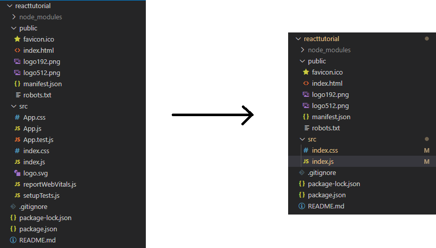

Vertiefungsthema
Nun gut... ich soll ein Thema wählen, welches ich vertiefen möchte. Außerdem soll es einen Bezug zum Thema "Web-Programmierung" haben... verständlich. Aber was nimmt man
da am Besten. Die Auswahl ist ja nicht gerade klein.
Diese Frage hat mich nun eine Weile beschäftigt und ich kam zu dem Schluss, dass ich mir etwas anschauen möchte, dass mich schon länger interessiert.
Und dieses ominöse Thema ist...
Ja genau, wir schauen uns React an. Denn warum sollte man denn etwas Einfaches zum Erklären nehmen, wenn man auch einfach versuchen kann ein weiteres Framework zu erklären. Und ja, React ist eine Bibliothek/ein Framework. Und ein/-e komplizierte/-s noch dazu. An dieser Stelle lasse ich auch das Wort Framework fallen und verwende von nun an nur noch das Wort Bibliothek (wird sonst zu aufwendig).
Was bitte ist React und was macht das?
Die React Website selbst beschreibt React als eine JavaScript Bibliothek zum Erstellen von komplexen User Interfaces. Es bietet aber noch viel mehr als das. So lassen sich komplette Web Anwendungen darin schreiben und Websites in einzelne, isolierte und wiederverwendbare "Komponenten" unterteilen.
class ShoppingList extends React.Component {
render() {
return (
<div className="shopping-list">
<h1>Shopping List for {this.props.name}</h1>
<ul>
<li>Instagram</li>
<li>WhatsApp</li>
<li>Oculus</li>
</ul>
</div>
);
}
}
// Example usage: <ShoppingList name="Mark" />
Hier sieht man ein Beispiel einer solchen Komponente ShoppingList. Diese ist in hier eine Subklasse von React.Component, aber es gibt noch andere.
Wie genau wird dieses Thema präsentiert?
Ich habe mir bis jetzt schonmal verschiedene Videos zum Thema angeschaut und auch ein Wenig in der Dokumentation von React selbst gelesen. Dabei kam ich zum Schluss, dass es wohl im Rahmen
dieser Vertiefung am Besten wäre etwas Praktisches zu machen. Hier bietet sich das offizielle Tutorial von React geradezu an und so werde ich im Laufe dieser Vertiefung eben jenes durcharbeiten und meine Erkenntnisse
mit dir/Ihnen (je nachdem wer das hier liest) teilen.
So habe ich mehr Spaß, ich kann mehr mit Bildern und Videos Arbeiten (d.h. es wird weniger langweiliger Fließtext) und am Ende kommt sogar etwas Interaktives dabei raus. Was genau das wird, dazu später mehr.
Wie entwickelt man nun React Apps?
React Apps sind im Vergleich zu JQuery basierten Webanwendungen ein Wenig komplizierter aufzusetzen. So genügt es nicht einfach eine JavaScript Datei einzubinden und loszulegen, man muss ein Projekt bauen. Glücklicherweise übernimmt
letzeres zu großen Teilen Node.js (eine JavaScript Runtime).
Aber genug von der Theorie, los geht's mit der Praxis...
Das Projekt
Was entwickeln wir?
Wie bereits erwähnt, hangeln wir uns am offiziellen React Tutorial entlang und so entwickeln wir...
Tic-Tac-Toe
Nicht das spannendste Spiel der Welt, aber immerhin ein Spiel üòÅ.
Setup
Unter der Vorraussetzung, dass wir Node.js installiert haben (das habe ich natürlich schon im Vorhinein erledigt) können wir auch schon direkt loslegen. Ich nutze Visual Studio Code (kurz: VS Code) für den gesammten Entwicklungsprozess, da es a) mittlerweile so ziemlich die beste kostenlose Entwicklungsumgebung ist und ich b) ohnehin schon damit arbeite. Selbst dieser Text wird gerade darin geschrieben.
Wir erstellen also einen neuen Ordner auf unserer Festplatte (bei mir der unglaublich kreative Name "reactTutorial"), öffnen VS Code, öffnen den Ordner darin und öffnen das Terminal (auf Windows mit strg+shift+ö). Dort schreiben wir "npx create-react-app reacttutorial". Darufhin beginnt Node.js mit der Erstellung unseres Projektes. Das kann einige Zeit dauern also mache ich mir jetzt mal einen Tee.
Das Projekt wirde nun erfolgreich erstellt und wir finden die links im Bild gezeigte Ordnerstruktur vor. Wir löschen die Beispieldateien im src Ordner und ersetzen diese durch unsere eigene index.css für unsere Styles und durch eine index.js für unseren JavaScript Code. Das orangene M neben den neu erstellten Dateien bedeutet im übrigen, dass die von React standardmäßig vorkonfiguerte Git Versionskontrolle funktioniert. VS Code erkennt diese automatisch und trackt Änderungen.
In unsere index.js schreiben wir nun das folgende:
import React from 'react';
import ReactDOM from 'react-dom';
import './index.css';
Dieser Code importiert nun drei wichtige Abhängigkeiten. Die für React wichtigen sowie unserer gerade erst erstellten index.css. Außerdem kopieren wir dort hinein den JavaScript Teil des uns von React gegebenen "Starter Codes" (hier klicken für den CodePen Link.
Dieser beinhaltet aber nicht nur JavaScript Komponenten. Er beinhaltet auch einen vorgefertigten CSS Code und einen vorgefertigten HTML Code, sodass wir am Ende ein Tic-Tac-Toe Gitter erhalten.
Anbei, der HTML Code muss in die von uns bis jetzt noch nicht angerührte index.html im Ordner public. Diese Datei ist die, die von außen her erreichbar ist (wie der Ordner Name public bereits suggeriert). Weil es aber schwierig ist, denn kompletten Inhalt der einzelnen Dateien hier auf die Seite zu packen fasse ich ihn kurz zusammen (allerdings kann man sich den Code auf CodePen [siehe Link weiter oben] anschauen).
- src/index.js: Unsere Ausgangsdatei für React. Der Starter Code enthält bereits die drei Klassen Game, Board (also das Spielbrett) und Square (also ein einzelnes Quadrat). Die Zugriffsreihenfolge sollte relativ selbsterklärend sein. So "erstellt" das Game ein Board und das Board "erstellt" 9 Squares. Zurückgegeben wird anschließend ein komplettes Tic-Tac-Toe Feld mit Hilfe der render Methoden der Klassen.
- src/index.css: Diese Datei ist für das Styling zuständig und sorgt hier dafür, dass unser Spielbrett auch wie eines aussieht und nicht wie 9 wahrlos umhergeschmissene Buttons.
- public/index.html: Diese Datei ist der öffentliche index und erhält durch den Starter Code einen div-Container für Fehlermeldungen, einen div-Container mit der ID root (der Ausgangspunkt für React) und einen script-Tag mit ein paar Event Listenern welche die Eingaben des Users erfassen und uns ermöglichen darauf zu reagieren.
Nachdem wir nun den "Starter Code" erfolgreich in unser Projekt übernommen haben können wir mit "npm start" über das Terminal den Node.js Developement Server starten. Dieser öffnet dann unseren Standardbrowser und wir erhalten das folgende Bild:
Damit ist unser initiales Setup abgeschlossen und wir können nun mit dem eingentlichen Tutorial beginnen.
Erste Erfahrungen mit props
Nun da wir unser Projekt "eingerichtet" haben können wir beginnen damit zu experimentieren. Wir beginnen mit dem Manipulieren von sogenannten props oder auch properties. Dies sind Eigenschaften, die wir in React mit Hilfe von JSX an andere Komponenten übergeben können. Ähnlich wie Parameter bei Methoden.
"Aber Moment mal... was ist JSX?" wird sich der ein oder andere fragen. Nun JSX steht für JavaScript Systax Extension und ist eine Erweiterung der üblichen JavaScript Grammatik für React. Genutzt wird dafür XML was dafür sorgt, dass der Code auch gewisse Ähnlichkeiten mit HTML aufweist. In gewisser Hinsicht wird hier
der Spieß umgedreht. "Normalerweise" wird ja JavaScript in HTML eingebaut. Nun wird HTML in JavaScript eingebaut.
Um die Funktionsweise von Props nun zu veranschaulichen bauen wir unseren Code wie folgt um. Wir ändern die renderSquare-Methode der Board-Klasse und fügen ihr einen prop mit dem Namen "value" hinzu. Dieser übergibt den aktuellen Index eines Squares.
class Board extends React.Component {
renderSquare(i) {
return <Square value={i} />;
}
}
In der Square-Klasse widerrum nutzen wir nun dieses Value und zeigen es auf dem Button an.
class Square extends React.Component {
render() {
return (
<button className="square">
{this.props.value}
</button>
);
}
}
Unsere Squares sind somit nicht mehr leer, sonder zeigen ihren jeweiligen Index an. Das Endresultat sieht dann so aus:
Wir haben also erfolgreich ein Prop von einem Eltern Element zu einem Kind Element weitergegeben. In React werden so Informationen verteilt.
Interaktive Buttons
Jetzt k√∂nnen wir also Zahlen ausgeben. Super spannend...üôÑ
Wir wollen nun auch etwas anklicken können also beginnen wir doch mal damit, dass ein Square ein "X" erhält wenn wir es anklicken. Dazu fügen wir dem button in der Square-Klasse
erst mal einen OnClick Event Handler hinzu.
class Square extends React.Component {
render() {
return (
<button className="square" onClick={() => alert('click')}>
{this.props.value}
</button>
);
}
}
Aber Moment mal, was macht der Pfeil da drin und wo ist unsere anonyme function? Nun um das kurz aufzuklären, hierbei handelt es sich um sogenannte "Arrow-Functions". Eingeführt wurden sie mit ES6 im Jahr 2015. Diese gab es bereits davor schon in anderen Sprachen (wie beispielsweise C# - daher kenne ich sie). Es handelt sich hier um einen vereinfachten Syntax zum Schreiben von Funktionen. Aufgebaut sind sie dabei immer nach dem gleichen Schema. Erst kommt eine runde Klammer welche die Parameter enthält, dann ein => und dann eine geschweifte Klammer, welche den Funktionscode enthält. Alternativ kann man diese auch benennen indem man ein let funktionsName = davor schreibt. Wen dieses Thema noch weiter interessiert, dem würde ich das Video von Web Dev Simplified empfehlen.
// Beispiel mit Name
let addieren = (a,b) => {
return a+b
};
// Bei simplen Functions kann man die geschweiften Klammen und return auch weglassen
let addierenEinfach = (a,b) => a+b;
Aber genug dazu, zurück zum eigentlichen Code. Wir können nun die Squares anklicken und ein alert-Fenster informiert uns darüber, dass das erfolgreich war. Wie aber speichern wir diesen Klick?
Die Antwort ist im state der Komponente, einer privaten Variable des Squares. Um diese nun zu setzen muss die Komponente erst einmal eine besitzen. Wir fügen also erst einmal einen Konstruktor hinzu der diese Variable für uns deklariert und initialisiert.
class Square extends React.Component {
constructor(props) {
super(props);
this.state = {
value: null,
};
}
// ...
Der super(props) Aufruf meint hier den Konstruktor der Superklasse (hier React.Component). Er muss immer zu erst aufgerufen werden. Danach definieren wir unseren State in JSON. Zu Beginn ist sein Wert null. Abschließend müssen wir nur dafür sorgen, dass ein Klick auf ein Square den State ändert und dieser dann auch angezeigt wird. Dazu gehen wir in die render-Methode zutück und passen diese folgendermaßen an:
class Square extends React.Component {
constructor(props){
super(props);
this.state = {
value: null,
};
}
render() {
return (
// OnClick setzt nun den State
// Der State wird anschließend ausgegeben
<button className="square" onClick={() => this.setState({value: 'X'})}>
{this.state.value}
</button>
);
}
}
Das Ergebnis kann sich schon sehen lassen: